| Current Projects | |
| 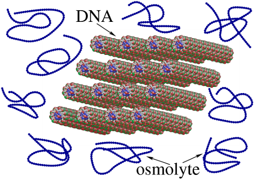 Biophysics of Nucleic Acids |
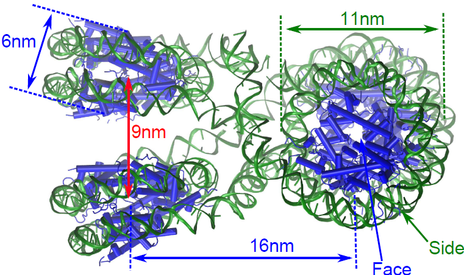 Chromatin Folding & Epigenetics |
| 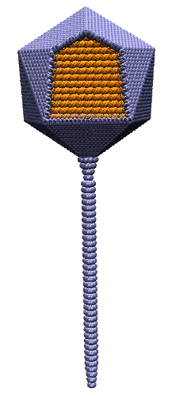 Physical Virology |
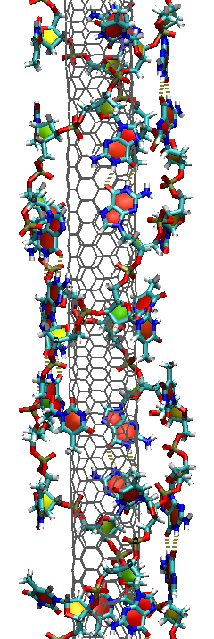 Biotic-Abiotic Hybrids |
| 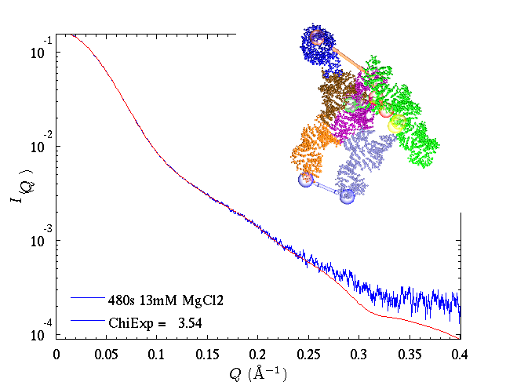 Biomolecular Structure in Solution |
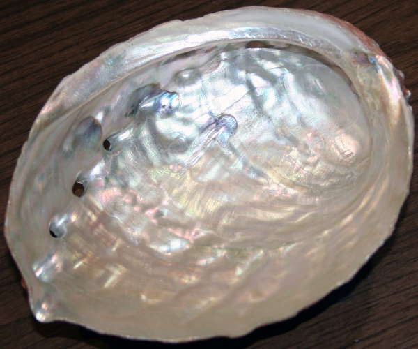 Biomineralization |
| Past Projects | |
| 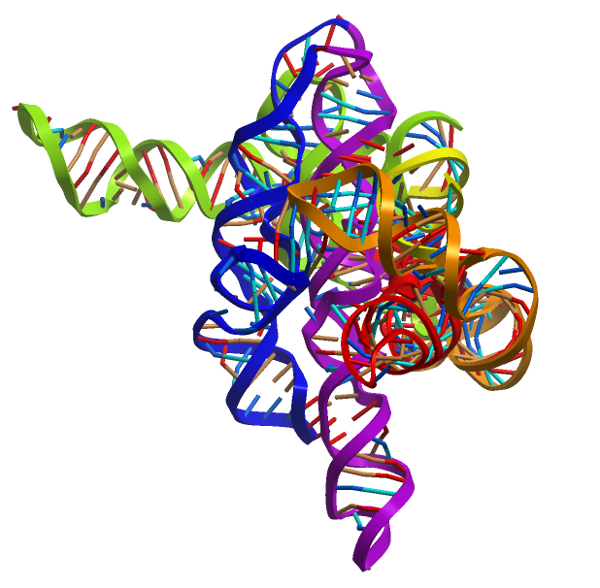 RNA Folding |
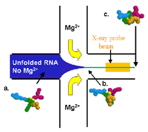 Microfluidic Mixer |
| 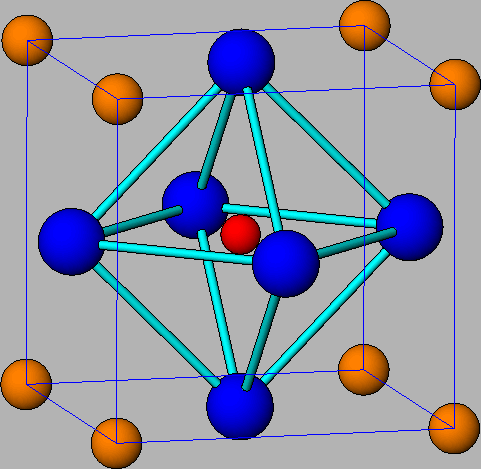 CMR Manganite |
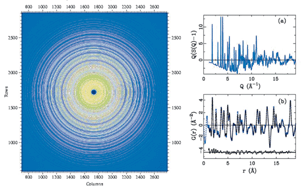 Rapid Acquisition PDF |
| PDFgetX2 |
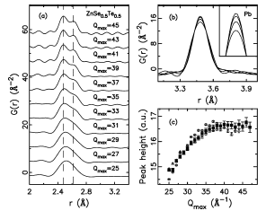 PDF Round Robin |